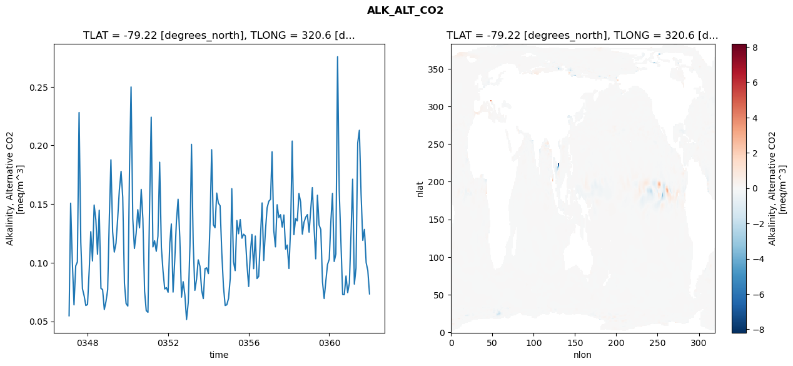
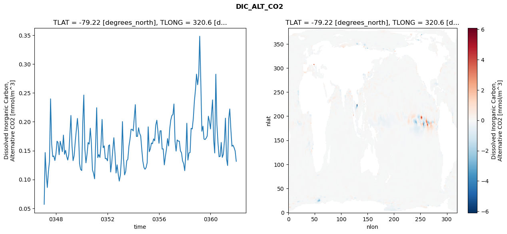
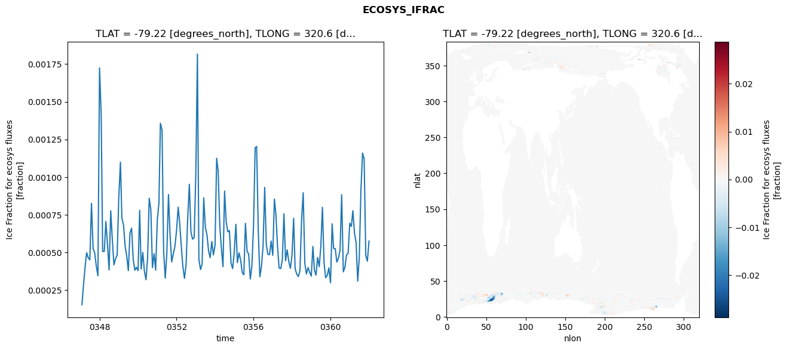

glb-dor_North_Atlantic_basin_044_1999-01-01_00176#
Simulation details#
Case: smyle.cdr-atlas-v0.glb-dor_North_Atlantic_basin_044_1999-01-01_00176.001
Basin: North_Atlantic_basin
Polygon: 44.0
Start date: 1999-01
Show code cell source Hide code cell source
import xarray as xr
import matplotlib.pyplot as plt
Show code cell source Hide code cell source
zarr_store = "/path/to/zarr/store"
# Parameters
zarr_store = "/global/cfs/projectdirs/m4746/Projects/Ocean-CDR-Atlas-v0/data/validation/smyle.cdr-atlas-v0.glb-dor_North_Atlantic_basin_044_1999-01-01_00176.001.validation.zarr"
Show code cell source Hide code cell source
%%time
ds_o = xr.open_zarr(zarr_store).compute()
ds_o
CPU times: user 566 ms, sys: 494 ms, total: 1.06 s
Wall time: 1.23 s
<xarray.Dataset> Size: 2MB
Dimensions: (nlat: 384, nlon: 320, time: 180)
Coordinates:
TLAT float64 8B -79.22
TLONG float64 8B 320.6
ULAT float64 8B -78.95
ULONG float64 8B 321.1
* time (time) object 1kB 0347-02-01 00:00:00 ... 0362-01-01 0...
z_t float32 4B 500.0
Dimensions without coordinates: nlat, nlon
Data variables:
ALK_ALT_CO2_diff (nlat, nlon) float32 492kB nan nan nan ... nan nan nan
ALK_ALT_CO2_rmse (time) float64 1kB 0.0548 0.1508 ... 0.09342 0.07343
DIC_ALT_CO2_diff (nlat, nlon) float32 492kB nan nan nan ... nan nan nan
DIC_ALT_CO2_rmse (time) float64 1kB 0.05695 0.1466 ... 0.1494 0.1315
ECOSYS_IFRAC_diff (nlat, nlon) float32 492kB nan nan nan ... nan nan nan
ECOSYS_IFRAC_rmse (time) float64 1kB 0.0001523 0.0002766 ... 0.0005746
FG_ALT_CO2_diff (nlat, nlon) float32 492kB nan nan nan ... nan nan nan
FG_ALT_CO2_rmse (time) float64 1kB 4.932e-06 1.091e-05 ... 1.923e-05xarray.Dataset
- nlat: 384
- nlon: 320
- time: 180
- TLAT()float64-79.22
- long_name :
- array of t-grid latitudes
- units :
- degrees_north
array(-79.22052261)
- TLONG()float64320.6
- long_name :
- array of t-grid longitudes
- units :
- degrees_east
array(320.56250892)
- ULAT()float64-78.95
- long_name :
- array of u-grid latitudes
- units :
- degrees_north
array(-78.95289509)
- ULONG()float64321.1
- long_name :
- array of u-grid longitudes
- units :
- degrees_east
array(321.12500894)
- time(time)object0347-02-01 00:00:00 ... 0362-01-...
- bounds :
- time_bound
- long_name :
- time
array([cftime.DatetimeNoLeap(347, 2, 1, 0, 0, 0, 0, has_year_zero=True), cftime.DatetimeNoLeap(347, 3, 1, 0, 0, 0, 0, has_year_zero=True), cftime.DatetimeNoLeap(347, 4, 1, 0, 0, 0, 0, has_year_zero=True), cftime.DatetimeNoLeap(347, 5, 1, 0, 0, 0, 0, has_year_zero=True), cftime.DatetimeNoLeap(347, 6, 1, 0, 0, 0, 0, has_year_zero=True), cftime.DatetimeNoLeap(347, 7, 1, 0, 0, 0, 0, has_year_zero=True), cftime.DatetimeNoLeap(347, 8, 1, 0, 0, 0, 0, has_year_zero=True), cftime.DatetimeNoLeap(347, 9, 1, 0, 0, 0, 0, has_year_zero=True), cftime.DatetimeNoLeap(347, 10, 1, 0, 0, 0, 0, has_year_zero=True), cftime.DatetimeNoLeap(347, 11, 1, 0, 0, 0, 0, has_year_zero=True), cftime.DatetimeNoLeap(347, 12, 1, 0, 0, 0, 0, has_year_zero=True), cftime.DatetimeNoLeap(348, 1, 1, 0, 0, 0, 0, has_year_zero=True), cftime.DatetimeNoLeap(348, 2, 1, 0, 0, 0, 0, has_year_zero=True), cftime.DatetimeNoLeap(348, 3, 1, 0, 0, 0, 0, has_year_zero=True), cftime.DatetimeNoLeap(348, 4, 1, 0, 0, 0, 0, has_year_zero=True), cftime.DatetimeNoLeap(348, 5, 1, 0, 0, 0, 0, has_year_zero=True), cftime.DatetimeNoLeap(348, 6, 1, 0, 0, 0, 0, has_year_zero=True), cftime.DatetimeNoLeap(348, 7, 1, 0, 0, 0, 0, has_year_zero=True), cftime.DatetimeNoLeap(348, 8, 1, 0, 0, 0, 0, has_year_zero=True), cftime.DatetimeNoLeap(348, 9, 1, 0, 0, 0, 0, has_year_zero=True), cftime.DatetimeNoLeap(348, 10, 1, 0, 0, 0, 0, has_year_zero=True), cftime.DatetimeNoLeap(348, 11, 1, 0, 0, 0, 0, has_year_zero=True), cftime.DatetimeNoLeap(348, 12, 1, 0, 0, 0, 0, has_year_zero=True), cftime.DatetimeNoLeap(349, 1, 1, 0, 0, 0, 0, has_year_zero=True), cftime.DatetimeNoLeap(349, 2, 1, 0, 0, 0, 0, has_year_zero=True), cftime.DatetimeNoLeap(349, 3, 1, 0, 0, 0, 0, has_year_zero=True), cftime.DatetimeNoLeap(349, 4, 1, 0, 0, 0, 0, has_year_zero=True), cftime.DatetimeNoLeap(349, 5, 1, 0, 0, 0, 0, has_year_zero=True), cftime.DatetimeNoLeap(349, 6, 1, 0, 0, 0, 0, has_year_zero=True), cftime.DatetimeNoLeap(349, 7, 1, 0, 0, 0, 0, has_year_zero=True), cftime.DatetimeNoLeap(349, 8, 1, 0, 0, 0, 0, has_year_zero=True), cftime.DatetimeNoLeap(349, 9, 1, 0, 0, 0, 0, has_year_zero=True), cftime.DatetimeNoLeap(349, 10, 1, 0, 0, 0, 0, has_year_zero=True), cftime.DatetimeNoLeap(349, 11, 1, 0, 0, 0, 0, has_year_zero=True), cftime.DatetimeNoLeap(349, 12, 1, 0, 0, 0, 0, has_year_zero=True), cftime.DatetimeNoLeap(350, 1, 1, 0, 0, 0, 0, has_year_zero=True), cftime.DatetimeNoLeap(350, 2, 1, 0, 0, 0, 0, has_year_zero=True), cftime.DatetimeNoLeap(350, 3, 1, 0, 0, 0, 0, has_year_zero=True), cftime.DatetimeNoLeap(350, 4, 1, 0, 0, 0, 0, has_year_zero=True), cftime.DatetimeNoLeap(350, 5, 1, 0, 0, 0, 0, has_year_zero=True), cftime.DatetimeNoLeap(350, 6, 1, 0, 0, 0, 0, has_year_zero=True), cftime.DatetimeNoLeap(350, 7, 1, 0, 0, 0, 0, has_year_zero=True), cftime.DatetimeNoLeap(350, 8, 1, 0, 0, 0, 0, has_year_zero=True), cftime.DatetimeNoLeap(350, 9, 1, 0, 0, 0, 0, has_year_zero=True), cftime.DatetimeNoLeap(350, 10, 1, 0, 0, 0, 0, has_year_zero=True), cftime.DatetimeNoLeap(350, 11, 1, 0, 0, 0, 0, has_year_zero=True), cftime.DatetimeNoLeap(350, 12, 1, 0, 0, 0, 0, has_year_zero=True), cftime.DatetimeNoLeap(351, 1, 1, 0, 0, 0, 0, has_year_zero=True), cftime.DatetimeNoLeap(351, 2, 1, 0, 0, 0, 0, has_year_zero=True), cftime.DatetimeNoLeap(351, 3, 1, 0, 0, 0, 0, has_year_zero=True), cftime.DatetimeNoLeap(351, 4, 1, 0, 0, 0, 0, has_year_zero=True), cftime.DatetimeNoLeap(351, 5, 1, 0, 0, 0, 0, has_year_zero=True), cftime.DatetimeNoLeap(351, 6, 1, 0, 0, 0, 0, has_year_zero=True), cftime.DatetimeNoLeap(351, 7, 1, 0, 0, 0, 0, has_year_zero=True), cftime.DatetimeNoLeap(351, 8, 1, 0, 0, 0, 0, has_year_zero=True), cftime.DatetimeNoLeap(351, 9, 1, 0, 0, 0, 0, has_year_zero=True), cftime.DatetimeNoLeap(351, 10, 1, 0, 0, 0, 0, has_year_zero=True), cftime.DatetimeNoLeap(351, 11, 1, 0, 0, 0, 0, has_year_zero=True), cftime.DatetimeNoLeap(351, 12, 1, 0, 0, 0, 0, has_year_zero=True), cftime.DatetimeNoLeap(352, 1, 1, 0, 0, 0, 0, has_year_zero=True), cftime.DatetimeNoLeap(352, 2, 1, 0, 0, 0, 0, has_year_zero=True), cftime.DatetimeNoLeap(352, 3, 1, 0, 0, 0, 0, has_year_zero=True), cftime.DatetimeNoLeap(352, 4, 1, 0, 0, 0, 0, has_year_zero=True), cftime.DatetimeNoLeap(352, 5, 1, 0, 0, 0, 0, has_year_zero=True), cftime.DatetimeNoLeap(352, 6, 1, 0, 0, 0, 0, has_year_zero=True), cftime.DatetimeNoLeap(352, 7, 1, 0, 0, 0, 0, has_year_zero=True), cftime.DatetimeNoLeap(352, 8, 1, 0, 0, 0, 0, has_year_zero=True), cftime.DatetimeNoLeap(352, 9, 1, 0, 0, 0, 0, has_year_zero=True), cftime.DatetimeNoLeap(352, 10, 1, 0, 0, 0, 0, has_year_zero=True), cftime.DatetimeNoLeap(352, 11, 1, 0, 0, 0, 0, has_year_zero=True), cftime.DatetimeNoLeap(352, 12, 1, 0, 0, 0, 0, has_year_zero=True), cftime.DatetimeNoLeap(353, 1, 1, 0, 0, 0, 0, has_year_zero=True), cftime.DatetimeNoLeap(353, 2, 1, 0, 0, 0, 0, has_year_zero=True), cftime.DatetimeNoLeap(353, 3, 1, 0, 0, 0, 0, has_year_zero=True), cftime.DatetimeNoLeap(353, 4, 1, 0, 0, 0, 0, has_year_zero=True), cftime.DatetimeNoLeap(353, 5, 1, 0, 0, 0, 0, has_year_zero=True), cftime.DatetimeNoLeap(353, 6, 1, 0, 0, 0, 0, has_year_zero=True), cftime.DatetimeNoLeap(353, 7, 1, 0, 0, 0, 0, has_year_zero=True), cftime.DatetimeNoLeap(353, 8, 1, 0, 0, 0, 0, has_year_zero=True), cftime.DatetimeNoLeap(353, 9, 1, 0, 0, 0, 0, has_year_zero=True), cftime.DatetimeNoLeap(353, 10, 1, 0, 0, 0, 0, has_year_zero=True), cftime.DatetimeNoLeap(353, 11, 1, 0, 0, 0, 0, has_year_zero=True), cftime.DatetimeNoLeap(353, 12, 1, 0, 0, 0, 0, has_year_zero=True), cftime.DatetimeNoLeap(354, 1, 1, 0, 0, 0, 0, has_year_zero=True), cftime.DatetimeNoLeap(354, 2, 1, 0, 0, 0, 0, has_year_zero=True), cftime.DatetimeNoLeap(354, 3, 1, 0, 0, 0, 0, has_year_zero=True), cftime.DatetimeNoLeap(354, 4, 1, 0, 0, 0, 0, has_year_zero=True), cftime.DatetimeNoLeap(354, 5, 1, 0, 0, 0, 0, has_year_zero=True), cftime.DatetimeNoLeap(354, 6, 1, 0, 0, 0, 0, has_year_zero=True), cftime.DatetimeNoLeap(354, 7, 1, 0, 0, 0, 0, has_year_zero=True), cftime.DatetimeNoLeap(354, 8, 1, 0, 0, 0, 0, has_year_zero=True), cftime.DatetimeNoLeap(354, 9, 1, 0, 0, 0, 0, has_year_zero=True), cftime.DatetimeNoLeap(354, 10, 1, 0, 0, 0, 0, has_year_zero=True), cftime.DatetimeNoLeap(354, 11, 1, 0, 0, 0, 0, has_year_zero=True), cftime.DatetimeNoLeap(354, 12, 1, 0, 0, 0, 0, has_year_zero=True), cftime.DatetimeNoLeap(355, 1, 1, 0, 0, 0, 0, has_year_zero=True), cftime.DatetimeNoLeap(355, 2, 1, 0, 0, 0, 0, has_year_zero=True), cftime.DatetimeNoLeap(355, 3, 1, 0, 0, 0, 0, has_year_zero=True), cftime.DatetimeNoLeap(355, 4, 1, 0, 0, 0, 0, has_year_zero=True), cftime.DatetimeNoLeap(355, 5, 1, 0, 0, 0, 0, has_year_zero=True), cftime.DatetimeNoLeap(355, 6, 1, 0, 0, 0, 0, has_year_zero=True), cftime.DatetimeNoLeap(355, 7, 1, 0, 0, 0, 0, has_year_zero=True), cftime.DatetimeNoLeap(355, 8, 1, 0, 0, 0, 0, has_year_zero=True), cftime.DatetimeNoLeap(355, 9, 1, 0, 0, 0, 0, has_year_zero=True), cftime.DatetimeNoLeap(355, 10, 1, 0, 0, 0, 0, has_year_zero=True), cftime.DatetimeNoLeap(355, 11, 1, 0, 0, 0, 0, has_year_zero=True), cftime.DatetimeNoLeap(355, 12, 1, 0, 0, 0, 0, has_year_zero=True), cftime.DatetimeNoLeap(356, 1, 1, 0, 0, 0, 0, has_year_zero=True), cftime.DatetimeNoLeap(356, 2, 1, 0, 0, 0, 0, has_year_zero=True), cftime.DatetimeNoLeap(356, 3, 1, 0, 0, 0, 0, has_year_zero=True), cftime.DatetimeNoLeap(356, 4, 1, 0, 0, 0, 0, has_year_zero=True), cftime.DatetimeNoLeap(356, 5, 1, 0, 0, 0, 0, has_year_zero=True), cftime.DatetimeNoLeap(356, 6, 1, 0, 0, 0, 0, has_year_zero=True), cftime.DatetimeNoLeap(356, 7, 1, 0, 0, 0, 0, has_year_zero=True), cftime.DatetimeNoLeap(356, 8, 1, 0, 0, 0, 0, has_year_zero=True), cftime.DatetimeNoLeap(356, 9, 1, 0, 0, 0, 0, has_year_zero=True), cftime.DatetimeNoLeap(356, 10, 1, 0, 0, 0, 0, has_year_zero=True), cftime.DatetimeNoLeap(356, 11, 1, 0, 0, 0, 0, has_year_zero=True), cftime.DatetimeNoLeap(356, 12, 1, 0, 0, 0, 0, has_year_zero=True), cftime.DatetimeNoLeap(357, 1, 1, 0, 0, 0, 0, has_year_zero=True), cftime.DatetimeNoLeap(357, 2, 1, 0, 0, 0, 0, has_year_zero=True), cftime.DatetimeNoLeap(357, 3, 1, 0, 0, 0, 0, has_year_zero=True), cftime.DatetimeNoLeap(357, 4, 1, 0, 0, 0, 0, has_year_zero=True), cftime.DatetimeNoLeap(357, 5, 1, 0, 0, 0, 0, has_year_zero=True), cftime.DatetimeNoLeap(357, 6, 1, 0, 0, 0, 0, has_year_zero=True), cftime.DatetimeNoLeap(357, 7, 1, 0, 0, 0, 0, has_year_zero=True), cftime.DatetimeNoLeap(357, 8, 1, 0, 0, 0, 0, has_year_zero=True), cftime.DatetimeNoLeap(357, 9, 1, 0, 0, 0, 0, has_year_zero=True), cftime.DatetimeNoLeap(357, 10, 1, 0, 0, 0, 0, has_year_zero=True), cftime.DatetimeNoLeap(357, 11, 1, 0, 0, 0, 0, has_year_zero=True), cftime.DatetimeNoLeap(357, 12, 1, 0, 0, 0, 0, has_year_zero=True), cftime.DatetimeNoLeap(358, 1, 1, 0, 0, 0, 0, has_year_zero=True), cftime.DatetimeNoLeap(358, 2, 1, 0, 0, 0, 0, has_year_zero=True), cftime.DatetimeNoLeap(358, 3, 1, 0, 0, 0, 0, has_year_zero=True), cftime.DatetimeNoLeap(358, 4, 1, 0, 0, 0, 0, has_year_zero=True), cftime.DatetimeNoLeap(358, 5, 1, 0, 0, 0, 0, has_year_zero=True), cftime.DatetimeNoLeap(358, 6, 1, 0, 0, 0, 0, has_year_zero=True), cftime.DatetimeNoLeap(358, 7, 1, 0, 0, 0, 0, has_year_zero=True), cftime.DatetimeNoLeap(358, 8, 1, 0, 0, 0, 0, has_year_zero=True), cftime.DatetimeNoLeap(358, 9, 1, 0, 0, 0, 0, has_year_zero=True), cftime.DatetimeNoLeap(358, 10, 1, 0, 0, 0, 0, has_year_zero=True), cftime.DatetimeNoLeap(358, 11, 1, 0, 0, 0, 0, has_year_zero=True), cftime.DatetimeNoLeap(358, 12, 1, 0, 0, 0, 0, has_year_zero=True), cftime.DatetimeNoLeap(359, 1, 1, 0, 0, 0, 0, has_year_zero=True), cftime.DatetimeNoLeap(359, 2, 1, 0, 0, 0, 0, has_year_zero=True), cftime.DatetimeNoLeap(359, 3, 1, 0, 0, 0, 0, has_year_zero=True), cftime.DatetimeNoLeap(359, 4, 1, 0, 0, 0, 0, has_year_zero=True), cftime.DatetimeNoLeap(359, 5, 1, 0, 0, 0, 0, has_year_zero=True), cftime.DatetimeNoLeap(359, 6, 1, 0, 0, 0, 0, has_year_zero=True), cftime.DatetimeNoLeap(359, 7, 1, 0, 0, 0, 0, has_year_zero=True), cftime.DatetimeNoLeap(359, 8, 1, 0, 0, 0, 0, has_year_zero=True), cftime.DatetimeNoLeap(359, 9, 1, 0, 0, 0, 0, has_year_zero=True), cftime.DatetimeNoLeap(359, 10, 1, 0, 0, 0, 0, has_year_zero=True), cftime.DatetimeNoLeap(359, 11, 1, 0, 0, 0, 0, has_year_zero=True), cftime.DatetimeNoLeap(359, 12, 1, 0, 0, 0, 0, has_year_zero=True), cftime.DatetimeNoLeap(360, 1, 1, 0, 0, 0, 0, has_year_zero=True), cftime.DatetimeNoLeap(360, 2, 1, 0, 0, 0, 0, has_year_zero=True), cftime.DatetimeNoLeap(360, 3, 1, 0, 0, 0, 0, has_year_zero=True), cftime.DatetimeNoLeap(360, 4, 1, 0, 0, 0, 0, has_year_zero=True), cftime.DatetimeNoLeap(360, 5, 1, 0, 0, 0, 0, has_year_zero=True), cftime.DatetimeNoLeap(360, 6, 1, 0, 0, 0, 0, has_year_zero=True), cftime.DatetimeNoLeap(360, 7, 1, 0, 0, 0, 0, has_year_zero=True), cftime.DatetimeNoLeap(360, 8, 1, 0, 0, 0, 0, has_year_zero=True), cftime.DatetimeNoLeap(360, 9, 1, 0, 0, 0, 0, has_year_zero=True), cftime.DatetimeNoLeap(360, 10, 1, 0, 0, 0, 0, has_year_zero=True), cftime.DatetimeNoLeap(360, 11, 1, 0, 0, 0, 0, has_year_zero=True), cftime.DatetimeNoLeap(360, 12, 1, 0, 0, 0, 0, has_year_zero=True), cftime.DatetimeNoLeap(361, 1, 1, 0, 0, 0, 0, has_year_zero=True), cftime.DatetimeNoLeap(361, 2, 1, 0, 0, 0, 0, has_year_zero=True), cftime.DatetimeNoLeap(361, 3, 1, 0, 0, 0, 0, has_year_zero=True), cftime.DatetimeNoLeap(361, 4, 1, 0, 0, 0, 0, has_year_zero=True), cftime.DatetimeNoLeap(361, 5, 1, 0, 0, 0, 0, has_year_zero=True), cftime.DatetimeNoLeap(361, 6, 1, 0, 0, 0, 0, has_year_zero=True), cftime.DatetimeNoLeap(361, 7, 1, 0, 0, 0, 0, has_year_zero=True), cftime.DatetimeNoLeap(361, 8, 1, 0, 0, 0, 0, has_year_zero=True), cftime.DatetimeNoLeap(361, 9, 1, 0, 0, 0, 0, has_year_zero=True), cftime.DatetimeNoLeap(361, 10, 1, 0, 0, 0, 0, has_year_zero=True), cftime.DatetimeNoLeap(361, 11, 1, 0, 0, 0, 0, has_year_zero=True), cftime.DatetimeNoLeap(361, 12, 1, 0, 0, 0, 0, has_year_zero=True), cftime.DatetimeNoLeap(362, 1, 1, 0, 0, 0, 0, has_year_zero=True)], dtype=object) - z_t()float32500.0
- long_name :
- depth from surface to midpoint of layer
- positive :
- down
- units :
- centimeters
- valid_max :
- 537500.0
- valid_min :
- 500.0
array(500., dtype=float32)
- ALK_ALT_CO2_diff(nlat, nlon)float32nan nan nan nan ... nan nan nan nan
- cell_methods :
- time: mean
- grid_loc :
- 3111
- long_name :
- Alkalinity, Alternative CO2
- units :
- meq/m^3
array([[ nan, nan, nan, ..., nan, nan, nan], [ nan, nan, nan, ..., nan, nan, nan], [0.0859375 , 0.05004883, 0.03613281, ..., nan, nan, nan], ..., [ nan, nan, nan, ..., nan, nan, nan], [ nan, nan, nan, ..., nan, nan, nan], [ nan, nan, nan, ..., nan, nan, nan]], dtype=float32) - ALK_ALT_CO2_rmse(time)float640.0548 0.1508 ... 0.09342 0.07343
- cell_methods :
- time: mean
- grid_loc :
- 3111
- long_name :
- Alkalinity, Alternative CO2
- units :
- meq/m^3
array([0.05480287, 0.15078235, 0.10028667, 0.06409902, 0.09729576, 0.10068855, 0.22807601, 0.11759334, 0.07784196, 0.07163424, 0.06355593, 0.06439934, 0.09433874, 0.12649266, 0.10152937, 0.14920132, 0.13653846, 0.10725325, 0.14480056, 0.07810719, 0.0771576 , 0.06013033, 0.06688054, 0.07697828, 0.14021985, 0.18776665, 0.12652742, 0.10911321, 0.11662101, 0.1373154 , 0.16225091, 0.17794997, 0.15589238, 0.08226799, 0.06514664, 0.0630534 , 0.18182351, 0.24985394, 0.13754589, 0.11218411, 0.12513333, 0.14526081, 0.12971011, 0.16253087, 0.13744563, 0.07565416, 0.05914307, 0.05775029, 0.1524951 , 0.22409958, 0.11350332, 0.1187377 , 0.10977724, 0.12265171, 0.18570384, 0.11313639, 0.09291749, 0.07761671, 0.07878619, 0.07485126, 0.11691432, 0.13305732, 0.07498669, 0.10158225, 0.13583786, 0.15412815, 0.12149626, 0.07066996, 0.08384125, 0.07254337, 0.05157893, 0.06600936, 0.1146436 , 0.20095508, 0.11676601, 0.0764375 , 0.08604616, 0.10248192, 0.09697451, 0.07647825, 0.06943938, 0.09493943, 0.09567514, 0.09074138, 0.13543259, 0.19638746, 0.1324128 , 0.12985264, 0.15938779, 0.15084213, 0.14861721, 0.10838769, 0.07983161, 0.0635493 , 0.06415175, 0.06957473, 0.08666651, 0.16315119, 0.10085169, 0.09329819, 0.13598812, 0.12474305, 0.13680148, 0.12091653, 0.12431728, 0.1228787 , 0.09868622, 0.07974175, 0.10895368, 0.12413995, 0.09496203, 0.12273766, 0.0865149 , 0.08832953, 0.12038467, 0.1509862 , 0.10193308, 0.12729942, 0.14676135, 0.15244213, 0.1540557 , 0.19460743, 0.12746396, 0.11358119, 0.14945303, 0.13848454, 0.14098231, 0.13041296, 0.14071176, 0.11163873, 0.11505847, 0.0950852 , 0.13145974, 0.20373083, 0.12394301, 0.13764177, 0.13574543, 0.15902771, 0.15162389, 0.12440622, 0.13456914, 0.13887922, 0.14104783, 0.1260558 , 0.14636703, 0.1640366 , 0.13007094, 0.10335539, 0.15757439, 0.1321652 , 0.12828511, 0.08353321, 0.06948906, 0.08477583, 0.09855636, 0.10288492, 0.13643432, 0.15913388, 0.10107351, 0.10744724, 0.2756232 , 0.16143401, 0.11675434, 0.07292457, 0.0728148 , 0.08870068, 0.07448967, 0.08258922, 0.12671978, 0.17124085, 0.08176734, 0.09526127, 0.20217706, 0.21292912, 0.15840701, 0.11905889, 0.12841176, 0.100011 , 0.09342261, 0.07342789]) - DIC_ALT_CO2_diff(nlat, nlon)float32nan nan nan nan ... nan nan nan nan
- cell_methods :
- time: mean
- grid_loc :
- 3111
- long_name :
- Dissolved Inorganic Carbon, Alternative CO2
- units :
- mmol/m^3
array([[ nan, nan, nan, ..., nan, nan, nan], [ nan, nan, nan, ..., nan, nan, nan], [0.08666992, 0.04418945, 0.04492188, ..., nan, nan, nan], ..., [ nan, nan, nan, ..., nan, nan, nan], [ nan, nan, nan, ..., nan, nan, nan], [ nan, nan, nan, ..., nan, nan, nan]], dtype=float32) - DIC_ALT_CO2_rmse(time)float640.05695 0.1466 ... 0.1494 0.1315
- cell_methods :
- time: mean
- grid_loc :
- 3111
- long_name :
- Dissolved Inorganic Carbon, Alternative CO2
- units :
- mmol/m^3
array([0.05694926, 0.14662211, 0.10920287, 0.08608269, 0.11437041, 0.1310776 , 0.23969705, 0.16140275, 0.13958814, 0.1407614 , 0.1328267 , 0.14473238, 0.16632809, 0.16398975, 0.14291798, 0.16613895, 0.15835152, 0.14830144, 0.17689718, 0.14366573, 0.15056278, 0.14004887, 0.1337234 , 0.14384241, 0.17977067, 0.21096994, 0.15826692, 0.13259411, 0.14140216, 0.16519719, 0.18571632, 0.20576738, 0.18253039, 0.12713364, 0.11737961, 0.11546831, 0.20010902, 0.2462989 , 0.1521005 , 0.12880643, 0.1437108 , 0.16392393, 0.16128159, 0.18878803, 0.16381585, 0.11684426, 0.11079784, 0.10111613, 0.16700935, 0.22434523, 0.13786211, 0.14319981, 0.13823241, 0.15970729, 0.20404684, 0.15505746, 0.1581691 , 0.13597378, 0.13640338, 0.13229057, 0.15840203, 0.15998099, 0.11299115, 0.12855841, 0.15170594, 0.17234983, 0.14584877, 0.11114228, 0.12534566, 0.10968869, 0.09720995, 0.1074391 , 0.13627037, 0.20028021, 0.13567745, 0.10795075, 0.11382784, 0.13247357, 0.13504804, 0.15777178, 0.16949676, 0.18688091, 0.1868183 , 0.18416207, 0.20792168, 0.2297069 , 0.17470397, 0.17463493, 0.18963523, 0.17999275, 0.175273 , 0.15158844, 0.13142954, 0.12072901, 0.11767502, 0.12067205, 0.12939977, 0.19121067, 0.14807022, 0.15293167, 0.16320342, 0.16188967, 0.17031969, 0.1670425 , 0.19395528, 0.20266808, 0.18368624, 0.16274076, 0.18410765, 0.18456878, 0.15275912, 0.15302598, 0.12531084, 0.13982589, 0.15266328, 0.17073916, 0.1580775 , 0.1874546 , 0.20297536, 0.21065558, 0.21277113, 0.23076001, 0.16607458, 0.14916704, 0.16843677, 0.16647733, 0.16639931, 0.1495357 , 0.14623774, 0.13206288, 0.12736324, 0.11524523, 0.14442135, 0.19739655, 0.13361619, 0.14596475, 0.14660433, 0.18865987, 0.18753378, 0.20609059, 0.23553031, 0.25523669, 0.28256364, 0.26423244, 0.28048827, 0.34818229, 0.27064105, 0.18361561, 0.19233388, 0.16991543, 0.16926365, 0.17173199, 0.17552252, 0.20960606, 0.20087564, 0.18763315, 0.21593243, 0.23792432, 0.1685043 , 0.1459307 , 0.28244628, 0.19586479, 0.16361347, 0.13938034, 0.13999471, 0.16413429, 0.13830017, 0.14378327, 0.16801346, 0.20623207, 0.13546082, 0.1241939 , 0.20527625, 0.22217915, 0.18692224, 0.15762728, 0.15927467, 0.1550057 , 0.14939383, 0.13147125]) - ECOSYS_IFRAC_diff(nlat, nlon)float32nan nan nan nan ... nan nan nan nan
- cell_methods :
- time: mean
- grid_loc :
- 2110
- long_name :
- Ice Fraction for ecosys fluxes
- units :
- fraction
array([[ nan, nan, nan, ..., nan, nan, nan], [ nan, nan, nan, ..., nan, nan, nan], [ 1.0669231e-05, 2.5576353e-04, -3.4451485e-05, ..., nan, nan, nan], ..., [ nan, nan, nan, ..., nan, nan, nan], [ nan, nan, nan, ..., nan, nan, nan], [ nan, nan, nan, ..., nan, nan, nan]], dtype=float32) - ECOSYS_IFRAC_rmse(time)float640.0001523 0.0002766 ... 0.0005746
- cell_methods :
- time: mean
- grid_loc :
- 2110
- long_name :
- Ice Fraction for ecosys fluxes
- units :
- fraction
array([0.00015232, 0.00027664, 0.00040017, 0.00049802, 0.00046315, 0.00045008, 0.00082526, 0.0005247 , 0.00049544, 0.0004072 , 0.00034434, 0.00172425, 0.00141242, 0.00050572, 0.00050651, 0.00070463, 0.00055035, 0.00038317, 0.00077607, 0.00057963, 0.00041701, 0.00045812, 0.00048191, 0.00086592, 0.00109878, 0.00072604, 0.00068049, 0.0005412 , 0.00047278, 0.00037816, 0.00062904, 0.00066034, 0.00045399, 0.00038147, 0.00040073, 0.00037799, 0.0007794 , 0.00038926, 0.00049956, 0.00037599, 0.00031815, 0.00046068, 0.00085879, 0.0007831 , 0.00039884, 0.00049082, 0.00038213, 0.00071362, 0.00082659, 0.00135687, 0.00131361, 0.00050588, 0.00032874, 0.00049328, 0.00088394, 0.00061129, 0.00043612, 0.00048991, 0.00053914, 0.00064372, 0.00079992, 0.0006973 , 0.00054274, 0.0004054 , 0.00032717, 0.00041787, 0.00072819, 0.00095197, 0.00063461, 0.00058761, 0.00059773, 0.00100407, 0.00181624, 0.00045414, 0.00038554, 0.00042107, 0.00086167, 0.00066672, 0.00061756, 0.00050818, 0.00046462, 0.00057182, 0.00048315, 0.00054535, 0.00112502, 0.00104183, 0.00068095, 0.0005284 , 0.00040484, 0.00090688, 0.00070206, 0.00063638, 0.0006445 , 0.00042834, 0.00039157, 0.00050376, 0.00068617, 0.00043158, 0.00049637, 0.00044946, 0.00036594, 0.00035097, 0.00069221, 0.00050839, 0.00048775, 0.00032307, 0.00040795, 0.00067411, 0.00119396, 0.0012034 , 0.00064756, 0.00033781, 0.00040831, 0.00054052, 0.00093124, 0.00054779, 0.00048654, 0.00048453, 0.00057499, 0.00048029, 0.00085355, 0.00075446, 0.00054278, 0.00039614, 0.00039225, 0.00044925, 0.00075554, 0.00044378, 0.00051614, 0.00043828, 0.00039335, 0.00048117, 0.00072635, 0.00039197, 0.00035519, 0.00033938, 0.00037888, 0.00071234, 0.00089569, 0.00042776, 0.0003565 , 0.00039931, 0.0003672 , 0.00034227, 0.00053892, 0.00038481, 0.00034854, 0.00046559, 0.00040467, 0.00053571, 0.00079902, 0.00042927, 0.00033108, 0.00034815, 0.0003964 , 0.000298 , 0.00068928, 0.0005256 , 0.00052442, 0.00043481, 0.0004614 , 0.00051398, 0.00088356, 0.00037054, 0.00039937, 0.00048242, 0.00049355, 0.00069378, 0.00067197, 0.00077653, 0.0006289 , 0.00056601, 0.00030846, 0.00046727, 0.00091269, 0.00115931, 0.00111992, 0.0004789 , 0.00044143, 0.00057463]) - FG_ALT_CO2_diff(nlat, nlon)float32nan nan nan nan ... nan nan nan nan
- cell_methods :
- time: mean
- grid_loc :
- 2110
- long_name :
- DIC Surface Gas Flux, Alternative CO2
- units :
- mmol/m^3 cm/s
array([[ nan, nan, nan, ..., nan, nan, nan], [ nan, nan, nan, ..., nan, nan, nan], [ 1.0644612e-07, -1.8461378e-08, 5.9604645e-08, ..., nan, nan, nan], ..., [ nan, nan, nan, ..., nan, nan, nan], [ nan, nan, nan, ..., nan, nan, nan], [ nan, nan, nan, ..., nan, nan, nan]], dtype=float32) - FG_ALT_CO2_rmse(time)float644.932e-06 1.091e-05 ... 1.923e-05
- cell_methods :
- time: mean
- grid_loc :
- 2110
- long_name :
- DIC Surface Gas Flux, Alternative CO2
- units :
- mmol/m^3 cm/s
array([4.93169568e-06, 1.09097116e-05, 1.10199096e-05, 1.28662755e-05, 1.46655844e-05, 1.53983436e-05, 1.37838929e-05, 1.66920851e-05, 1.93090247e-05, 2.32572155e-05, 1.75784158e-05, 2.46740897e-05, 2.32532070e-05, 1.72822473e-05, 1.28560543e-05, 1.29891918e-05, 1.40651276e-05, 1.28748992e-05, 1.49081078e-05, 1.53519204e-05, 1.86186813e-05, 2.15694904e-05, 2.04627872e-05, 2.14458202e-05, 2.19977954e-05, 1.62444661e-05, 1.44641999e-05, 1.39510356e-05, 2.41504110e-05, 1.83862605e-05, 1.98395946e-05, 1.64350824e-05, 1.62257071e-05, 1.69884132e-05, 1.90817518e-05, 1.76516666e-05, 1.85254692e-05, 1.79318430e-05, 1.25698142e-05, 1.34591308e-05, 1.32079645e-05, 2.44309075e-05, 1.79967321e-05, 2.10730092e-05, 1.64617034e-05, 1.33342291e-05, 1.42561128e-05, 1.59262250e-05, 1.62194254e-05, 1.46231461e-05, 1.24371227e-05, 1.81353530e-05, 1.69394236e-05, 2.41787482e-05, 2.09745516e-05, 1.64173634e-05, 2.15138486e-05, 2.43675972e-05, 2.14469301e-05, 2.01637347e-05, 1.99689850e-05, 2.04868287e-05, 2.23909350e-05, 2.24982251e-05, 1.79998504e-05, 1.63887811e-05, 1.36887222e-05, 1.40138570e-05, 1.74467398e-05, 1.36329705e-05, 1.65844629e-05, 1.93456694e-05, 2.10785325e-05, 1.49711701e-05, 1.45403499e-05, 1.28636465e-05, 1.38733465e-05, 1.49631724e-05, 1.30688656e-05, 2.15112273e-05, ... 2.81893239e-05, 2.32859373e-05, 2.24834992e-05, 1.91185022e-05, 2.52307032e-05, 2.79304873e-05, 2.88522297e-05, 2.59158082e-05, 2.40614915e-05, 2.25314761e-05, 1.61606409e-05, 1.53887490e-05, 1.12322819e-05, 1.21897716e-05, 1.49717949e-05, 1.57005448e-05, 1.38857284e-05, 1.96322356e-05, 1.79217998e-05, 2.22322316e-05, 2.39315996e-05, 2.09518314e-05, 1.66038644e-05, 1.37225804e-05, 1.31917012e-05, 1.08879710e-05, 1.23838672e-05, 1.13935138e-05, 1.46499614e-05, 1.42441220e-05, 1.39425723e-05, 1.43342718e-05, 1.79373607e-05, 2.47737763e-05, 4.32059998e-05, 4.77653826e-05, 1.63976449e-05, 1.60894019e-05, 1.90778340e-05, 2.22923598e-05, 2.88367291e-05, 3.52689662e-05, 4.43252086e-05, 4.50228270e-05, 3.98473653e-05, 3.91520806e-05, 2.68519452e-05, 1.98200677e-05, 1.93845222e-05, 1.84280699e-05, 1.61802214e-05, 1.74183597e-05, 2.25736173e-05, 2.96537753e-05, 3.53192431e-05, 3.38729546e-05, 4.68340569e-05, 1.16911217e-04, 3.47293694e-05, 1.63454334e-05, 1.54403061e-05, 1.50849935e-05, 1.68077467e-05, 1.54367621e-05, 1.75498388e-05, 2.22789440e-05, 2.14180757e-05, 2.16584630e-05, 2.26993249e-05, 2.05289273e-05, 1.47395276e-05, 1.52011026e-05, 1.28987450e-05, 1.35174897e-05, 2.01281476e-05, 1.72548407e-05, 2.02423291e-05, 1.65227869e-05, 1.87485936e-05, 1.92314798e-05])
- timePandasIndex
PandasIndex(CFTimeIndex([0347-02-01 00:00:00, 0347-03-01 00:00:00, 0347-04-01 00:00:00, 0347-05-01 00:00:00, 0347-06-01 00:00:00, 0347-07-01 00:00:00, 0347-08-01 00:00:00, 0347-09-01 00:00:00, 0347-10-01 00:00:00, 0347-11-01 00:00:00, ... 0361-04-01 00:00:00, 0361-05-01 00:00:00, 0361-06-01 00:00:00, 0361-07-01 00:00:00, 0361-08-01 00:00:00, 0361-09-01 00:00:00, 0361-10-01 00:00:00, 0361-11-01 00:00:00, 0361-12-01 00:00:00, 0362-01-01 00:00:00], dtype='object', length=180, calendar='noleap', freq='MS'))
Show code cell source Hide code cell source
variables = [v[:-5] for v in ds_o.variables if "_rmse" in v]
Show code cell source Hide code cell source
plt.rcParams.update({'figure.max_open_warning': 0})
for v in variables:
fig, axs = plt.subplots(1, 2, figsize=(15, 6))
ds_o[f"{v}_rmse"].plot(ax=axs[0])
ds_o[f"{v}_diff"].plot(ax=axs[1])
plt.suptitle(v, fontweight="bold")


